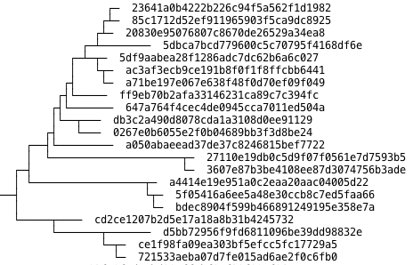
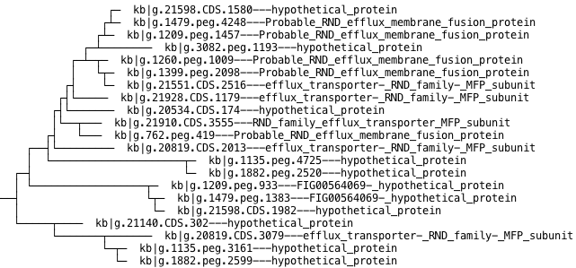

The Central Store (CS) of KBase includes a large set of precomputed multiple sequence alignments and phylogenetic trees covering a diverse range of gene families. Most protein coding features of KBase are mapped to at least a few alignments and trees. Alignment and tree data can be retrieved using the Central Data Model API (CDMI) or CS command line scripts. Working with tree-based data can be challenging, however, because it requires working with tree structures and not just tab delimited file formats.
The KBase Phylogenetic Tree Service provides a set of query and tree manipulations methods that make it easier to retrieve and manipulate phylogenetic tree data objects and prepare them for further analysis. This tutorial will guide you through the basic steps of using the Perl client libraries of the Tree Service.
Trees in KBase are stored by default in Newick format, which is a succinct, text-based format for representing tree structures. Richer meta data associated with particular trees or nodes is stored directly in the CDM so that it is more amenable to search. Most phylogenetic trees are constructed from sequence alignments. When associated alignment data is available, KBase will store the relationship between trees and their alignments in the relationship named 'IsUsedToBuildTree'.
Perl code described in this tutorial is available here: tree_perl_client_basics.pl
All trees in the Central Data Store (CDS) can be retrieved by the standard Central Data Model API (CDMI). For instance, code to retrieve a set of trees by tree ID along with their associated newick data is shown below.
use Bio::KBase::CDMI::CDMIClient;
my $cdmi = Bio::KBase::CDMI::CDMIClient->new_for_script();
my $tree_data = $cdmi->get_entity_Tree(["kb|tree.41"], ["status", "method", "parameters", "newick"]);
In this example, we create a new CDMI object, then use the standard pattern of 'get_entity' to retrieve data for a specific tree. Specifically, we ask to retrieve the 'status', 'method', 'parameters', and 'newick' attributes of the tree. This call to the CDMI returns the result in a hash structure that is shown below. (Note that the full newick string was omitted here for brevity).
$VAR1 = {
'kb|tree.41' => {
'parameters' => '--spr 4 -cat 20',
'newick' => '( .... );',
'status' => 'active',
'id' => 'kb|tree.41',
'method' => 'FastTree 2.1.2 SSE3'
}
};
The node labels of the newick string representation each reference a particular row ID of a sequence alignment (corresponding to a single sequence in an alignment). The row ID is unique within the alignment or tree, but the ID is not necessarily a KBase sequence or feature ID. Some alignments (Such as species trees) are composed of a concatenation of multiple sequences, so row IDs map instead to an AlignementRow object which in turn maps to actual protein or DNA sequences. Therefore, to search for the set of trees that contain a particular protein sequence directly through the CDMI, you must traverse several entities and relationships starting with 'ContainsAlignedProtein' and ending with 'Tree'.
The Tree service provides a shortcut for this type of query. To find a set of trees that include some segment of a given protein sequence, use the following code:
use Bio::KBase::Tree::Client;
my $TreeService = Bio::KBase::Tree::Client->new("http://localhost:7047");
my $tree_ids=$TreeService->get_tree_ids_by_protein_sequence(["cf3c6b5c1f4f24f69866333d4daeb3c8"]);
The first line declares that we are using the Tree Service client library. The second line of code creates a new client object that links to the URL of the Tree service. The third line calls a method that returns a set of tree ids that contain at least some portion of the specified protein sequence ID. Like all protein sequnces in KBase, the protein sequence ID is the computed MD5 is identified by the MD5 hash of the sequence.
Alternatively, you can search for trees based on feature IDs with the code below. This method maps the feature ID to a protein sequence, then searches for any trees which were built from alignments including this protein sequence. Keep in mind that multiple features can encode for the exact same protein sequence.
$tree_ids=$TreeService->get_tree_ids_by_feature(["kb|g.371.peg.4539"]);
Whether you search based on a protein sequence ID or a feature ID, these Tree Service methods return a list of tree IDs indicating the set of trees built from alignments of the specified protein sequences. For example, the queries shown above generate results that will look similar to this:
$VAR1 = [
'kb|tree.10094',
'kb|tree.10547',
'kb|tree.11177',
'kb|tree.11397',
'kb|tree.15024',
'kb|tree.20035',
'kb|tree.24782',
'kb|tree.9399'
];
As mentioned earlier, you can always use tree IDs with the CDMI to retrieve any information stored in the CDM. Alternatively, the Tree Service also provides a shortcut for simplifying simple lookups by aggregating properties about each of the trees, such as the total number of nodes and leaves. To obtain this information as a simple hash, use the following code:
my $tree_data=$TreeService->get_tree_data($tree_ids);
This code takes the list of tree IDs that you generated earlier, analyzes the structure of each tree, and assembles useful meta data. Note that because the actual structure of the tree is analyzed, this method may take an extended time to complete for very large trees or very long lists of IDs. Calling the above function returns a hash containing labeled information about each tree, in a data structure shown below. Only the first two trees in the list are reproduced here.
$VAR1 = {
'kb|tree.10094' => {
'source_id' => 'tree00010100',
'tree_contruction_method' => 'FastTree 2.1.2 SSE3',
'source_db' => 'SEED',
'status' => 'active',
'date_created' => '1344482065',
'leaf_count' => 2506,
'tree_construction_parameters' => '--spr 4 -cat 20',
'node_count' => 4963,
'alignment_id' => 'kb|aln.10094',
'type' => 'sequence_alignment'
},
'kb|tree.15024' => {
'source_id' => 'tree00015030',
'tree_contruction_method' => 'FastTree 2.1.2 SSE3',
'source_db' => 'SEED',
'status' => 'active',
'date_created' => '1344501012',
'leaf_count' => 1482,
'tree_construction_parameters' => '--spr 4 -cat 20',
'node_count' => 2952,
'alignment_id' => 'kb|aln.15024',
'type' => 'sequence_alignment'
},
...
};
Similarly, you can retrieve meta information about a particular alignment by executing the following code:
my $tree_data=$TreeService->get_alignment_data(["kb|aln.15024"]);
which in this case produces the following result:
$VAR1 = {
'kb|aln.15024' => {
'source_id' => 'SEED',
'is_concatenation' => '0',
'n_rows' => '1482',
'n_cols' => '1929',
'source_db' => 'SEED',
'status' => 'active',
'alignment_protocol' => 'Sequences were identified with PSI-BLAST, trimmed to PSI-BLAST profile, aligned and treed',
'date_created' => '1344501012',
'sequence_type' => 'Protein',
'alignment_construction_method' => 'MAFFT v6.818b',
'tree_ids' => [
'kb|tree.15024'
],
'alignment_construction_parameters' => '--op 1.53 --maxiterate 1000 --linsi'
}
};
The node names in a tree correspond to alignment row IDs, but these IDs alone do not always provide useful information. Therefore the Tree Service offers a function named 'get_tree' which returns the tree structure with the node names replaced by KBase IDs. The KBase IDs can map to different KBase entities depending on the options you provide. Here you will simply replace the names with protein sequence IDs with the following Perl code:
my $options = {
newick_label=>"protein_sequence_id",
newick_bootstrap=>"none",
newick_distance=>"raw"};
my $tree = $TreeService->get_tree('kb|tree.15024', $options);
This method accepts an options hash which defines how you want the labels of the tree decorated. In this case, the node labels are set to be protein sequence ids. Additionaly, the options specify that any bootstrap values are left out, and that branch distances are retained in the original, raw format. For some trees, multiple protein sequences can be mapped to the same node, but the 'get_tree' method as shown above uses only the first protein sequence found. For this particular tree, however, this is fine because each alignment row and leaf corresponds to only a single protein sequence. You can determine this quickly by inspecting the 'is_concatenation' attribute of the specified 'Alignment' entitiy as shown above. If set to zero or false, then the alignment rows contain only single contiguous protein or DNA sequences.
Now that you have the structure of the tree in newick format, already with some useful information contained in each node label, you can perform a variety of operations to inspect the structure of the Tree. Here we will demonstrate just a few simple examples, but more complex functions offered by the Tree services are used in a similar way. As a simple example, first compute the number of nodes and leaves with the following code.
my $node_count = $TreeService->get_node_count($tree);
my $leaf_count = $TreeService->get_leaf_count($tree);
print "Node Count: ".$node_count."\nLeaf Count: ".$leaf_count."\n";
To invoke either of these methods, you simply pass the tree structure (represented as a newick string) into these methods. Note that the tree structure does not necessarily have to be built from the Tree Services! Any valid newick string can be stored as a string and used as input for these methods. The code above provides the following output. As expected, the node and leaf counts match the values returned previously for the tree with id 'kb|tree.15024' that was returned from the 'get_tree_data' method.
Node Count: 2952
Leaf Count: 1482
To show another example, you can extract a list of all the leaf names from a specified tree structure with this line of code:
my $leaf_labels = $TreeService->extract_leaf_node_names($tree);
As you might expect, the names of the nodes are MD5 hash values of protien sequences that we requested from the call to 'get_tree':
$VAR1 = [
'5fbe6b9e15365d9cd153749d555ade93',
'fa04ae7eae013ddba59333034de2635e',
'a15d7022f62ea0a6bb67b0bb917b1d7c',
...
'4ab1cc69cf33b8cd016868dc30f1ac50',
'1b86437371f55285b6c29fde1a029071'
];
Visualizing incredibly large phylogentic trees that are becoming ever more common in an intuitive and useful way is still an open computational biology challenge. The Tree Service does, however, provide a simple HTML-based renderer that is designed for generating quick displays which nonetheless can still be quite useful. To take the tree structure we retrieved previously and display it as an html file, run the following Perl code:
my $display_options = {};
my $tree_in_html = $TreeService->draw_html_tree($tree,$display_options);
open (TREE_HTML_FILE, '>tree.html');
print TREE_HTML_FILE $tree_in_html;
close (TREE_HTML_FILE);
In the first line of code, we setup an options hash that allows us to customize the display. The code above demonstrates the simplist option which uses default settings. The second line calls the Tree Service to render the HTML page using the tree structure as input. The result is returned as a string named '$tree_in_html'. The final three lines writes he tree string to a file in the current directory named 'tree.html'. You can then view the tree in any web browser, which will look something like this:
The last exercise of this tutorial is to combine the Tree Services with calls to the CDMI to perform a slightly more advanced operation. From the steps above, you have retrieved and analyzed a tree that is labeled by protein sequence IDs. That's great, but MD5 values are of course impossible to understand by eye. What if we wanted to display labels that more useful? Furthermore, what if we want those labels to include something custom that is not available from the 'get_tree' command? In this section, you will retrieve a tree with protein sequence IDs, look up feature IDs based on the protein sequences, then lookup a role that the feature ID is assigned to. Finally, you will use this information to label the leaves and display the tree.
First, combine several of the steps above that you used earlier to retrieve the tree of interest with protein sequence IDs, and extract the list of protein sequence IDs.
my $options = {
newick_label=>"protein_sequence_id",
newick_bootstrap=>"none",
newick_distance=>"raw"};
my $tree = $TreeService->get_tree('kb|tree.15024', $options);
my $leaf_labels = $TreeService->extract_leaf_node_names($tree);
Now that we have a list of protein sequence IDs, use the CDMI to identifiy the set of features that each protein sequence maps to with the following code:
my $fid_map = $cdmi->proteins_to_fids($leaf_labels);
You now have a hash object which maps every protein sequence to a set of feature ids. Again, remember that you will get multiple features for each sequence in most cases! The '$fid_map' object will be populated like this:
$VAR1 = {
...
'b5c09af56c3f0e0947daf70a67e9df7d' => [
'kb|g.410.peg.2499',
'kb|g.8860.peg.2256'
],
'00b2bea877f5266219768af92bbd31cb' => [
'kb|g.892.peg.4350'
],
'db0321691efcb1612881c8958711fc6d' => [
'kb|g.1285.peg.803',
'kb|g.21499.CDS.2292',
'kb|g.4409.peg.1154.rna.20.peg.2292'
],
...
};
In this case, it doesn't really matter which feature ID we chose because we just want a simple reference for display purposes of the tree. In other cases, you may want to retrieve features only from specific genomes or organisms, in which case additional processing may be required. Since for this exercise, your choice does not matter, just select the first feature from each of the lists so that we have a single feature ID per node using the following code:
my @list_of_first_features = ();
foreach my $leaf ( keys %{$fid_map} ) {
push @list_of_first_features, %{$fid_map}->{$leaf}[0];
}
This code takes the first feature (element at position zero) of each set of features that was found and adds them to a simple list of all the features. With this list of features, we can now retrieve a set of roles that are assigned to each feature, again using the CDMI.
my $fid_to_role_map = $cdmi->fids_to_roles(\@list_of_first_features);
You are again in a similar situation as before in that each feature can map to multiple roles. For example, here is the partial output of the above call that is stored in the '$fid_to_role_map' object:
$VAR1 = {
...
'kb|g.8352.peg.3300' => [
'putative secretion protein (HlyD family)',
'putative toxin/protease secretion system'
],
'kb|g.515.peg.1744' => [
'hypothetical protein'
],
'kb|g.701.peg.764' => [
'Secretion protein, HlyD family'
],
...
};
Given your map from protein sequence IDs to feature IDs, and from feature IDs to roles, you will now assemble a map that connects protein sequence IDs to a label which includes the feature ID and role. Do this with the following code:
my $md5_to_new_label_map = {};
foreach my $leaf ( keys %{$fid_map} ) {
my $fid = %{$fid_map}->{$leaf}[0];
my $role = $fid_to_role_map->{$fid}[0];
if($role) { $md5_to_new_label_map->{$leaf} = $fid.'---'.$role; }
else { $md5_to_new_label_map->{$leaf} = $fid.'---NONE_FOUND'; }
}
This block of code loops through every original leaf label in the protein sequence ID to feature ID map. For each of these IDs, you can then identifiy the first feature ID (in line 3), and then the first role listed (in line 4). If a role was identified, save it in the map. If a role wasn't defined, save a message indicating the missing role. Running this code will populate the '$md5_to_new_label_map', which we can finally use to rename the labels of the tree. Call the following method of the Tree Service to do so:
my $updated_tree = $TreeService->replace_node_names($tree, $md5_to_new_label_map);
The code above will take the mapping that you just created, and use it to update all of the matching labels of the tree. Instead of MD5 hash values, you now have a tree with your own custom labels. The very last step is to display the final tree as an HTML page as we did before:
my $display_options = {};
my $tree_in_html = $TreeService->draw_html_tree($updated_tree,$display_options);
open (TREE_HTML_FILE, '>updated_tree.html');
print TREE_HTML_FILE $tree_in_html;
close (TREE_HTML_FILE);
And that's it. Putting all these steps together will give you a script that can pull a phylogenetic tree from the CDM, determine a set of features and roles that correspond to each leaf node, and finally display the tree with custom labels that will look something like this:
